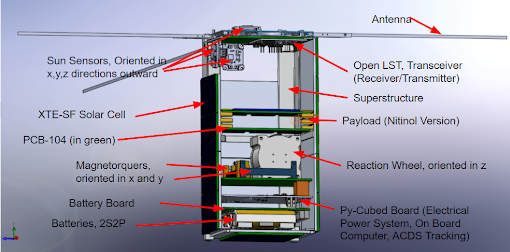
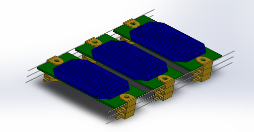
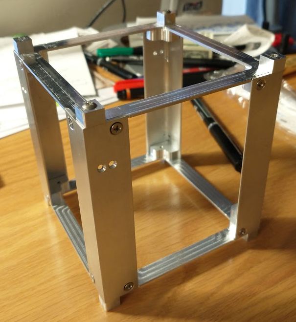

The Harvard Satellite Team is a student-led engineering team with Harvard’s SEDS chapter developing a 2U CubeSat as a platform to test a shape-memory alloy-based solar panel deployment system. The CubeSat employs an in-house design for it’s bus structure as well as in-house photovoltaic cells for power and a nitinol payload deployment mechanism. The design, prototype, and white paper are being submitted to Nasa’s CubeSat Launch Initiative (CSLI) targeting a LEO deployment in 2023.


Payload Team Lead:As the Payload Team Lead, I oversaw the research and development for the three initial payload candidates. These included the final nitinol design, a bistable, soft pneumatic actuator, and a central torsion spring. Coming into this year, we will begin physical prototypes of our shape-membory alloy deployment system for testing and evaluation.I also arranged team meetings, established a working relationship with a corporate partner in solar technology, and interfaced with Harvard’s administration toward lab space, funding, and resources.

Bus Team Member:As a Bus Team member, I learned Ansys' Systems Tool Kit to model our CubSat’s orbital trajectory and communication coverage. I also selected the satellite's on-board computer based on low Earth orbit environment and payload requirements.I also co-authored a white paper on CubeSat design entitled "A Reliable Means of Power Collection and Storage Using a Deployable Soft, Rollable Solar Panel" for submission to NASA's CubeSat Launch Initiative (CSLI).